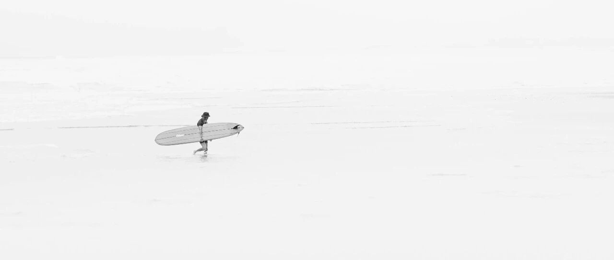

未来如洪流~
过去几个交易日，美股震荡企稳，四巫日轻微反弹了。
纳指从17238点反弹到了17784点，标普500从5504点反弹到了5667点。
我基本上没怎么动，就两个新账户买入了一些IVV、VOO和Meta，其他的还没跌到想补仓的点位。
接下去最重要的是4月2日，“关税对等”那天，看会不会有加仓的机会。
整体按原计划的节奏来，随着下跌逐步买入。
纳指17000点和标普5300点这两个点位很重要，如果出现这两个节点及以下点数，我会开始大幅加仓，之前在17500和17300都加仓了。
老美现在的通胀有降低的趋势，我最关注的其实也就两三项比较有代表的:
一个是鸡蛋价格，老美的日常生活中，鸡蛋几乎是用量最大最广的食物之一，所以鸡蛋很具有代表性，目前老美的鸡蛋价格正在下降；
另一项是房租租金，这个是支出中占比较大的一项，目前租金价格涨幅也在收窄，不像之前那么夸张。
整体来说，从目前的趋势上看，老美的通胀可控。
但如果关税落地后，成本转嫁到供应商不成功，那么对老美短期内压制通胀会比较有压力。
铜最近走得不错，伦铜和纽铜价格都上涨得比较理想，沪铜也在上涨。
目前，老美的铜需求量很大，未来一段时间内铜可能会有一波行情。
我去年沪铜没能在8.9万的高点清仓（原计划9万卖），导致后来一路跌到7万出头，接近成本线附近。
最近行情来了，想用不一样的方式操作沪铜试试。
所以在7.9万开始，随着上涨陆续减仓，在7.92-8.15减仓了一部分；后续会随着价格上涨逐步清仓，每上涨1000，减仓5-10%，直至清仓。
整体来说，这笔投资不算好，也不坏，比预期的差了点。整体逻辑和原理没问题，就是精算上出了点小偏差，导致在卖出这个环节上出了点问题。
还好现在有补救的机会，看看这波行情能走到什么程度。
至于伦铜，也会找个时间清了，目前的投资太分散了，还是要更聚焦和专注些。
… …
周末带孩子们户外活动，找了个有山有水，很适合露营的地方。
小儿子有点咳嗽，我媳妇说他最近不怎么吃水果、蔬菜，比较挑食。
小儿子一听，很不服气地说他妈妈又冤枉他了，他早上明明已经吃了好几块苹果。
我们会允许孩子解释，不会拿家长的派头去压制他们，鼓励他们表达自己的看法和想法，倾听他们的解释。
他们觉得自己很幸运，相比他们的同学朋友，很多都是被家长压制或揍一顿。
于是我拉起小儿子的手看了看，问他手指上怎么又长倒刺了？想了想，我告诉他:
“这是你的身体在向你发出求救信号，它们不会说话，只能通过这种方式告诉你，目前营养不均衡，它们需要更多不同种类的微量元素和维生素。
就像你渴了，是身体在向你发出求救信号，要求获得水分补充，所以你收到信号后就喝水；
像你要尿尿和排便，其实是你的膀胱和肠道在向你发出求救信号，要求排除有害垃圾”。
小儿子很认真地表示，接下去会好好吃水果、蔬菜。同时表示，还是喜欢我的沟通方式，“是什么、为什么”说得很清楚，他就知道怎么做了。不像妈妈每次都不说清楚为什么，只会强迫他要吃。
只能告诉他，妈妈每天要处理家里大大小小的繁琐事和工作，人的精力是有限的，所以没办法每个事都说得很清楚，希望他理解和体谅妈妈。
小儿子点了点头，表示理解。他又问，怎样才能像爸爸你一样，什么东西都知道呢？
我:这些都是我几十年来在书本上看到的知识，记住并理解运用，就成了自己的了；小的时候，可没有手机这种东西，只能自己看书，从书中获取知识；如果你也这么做，长大以后你也会像我一样，甚至知道得比我更多。
他说自己也在多看书，少看手机，看手机也是在看纪录片之类的。
他最近几个月自控力明显提升了很多，放学自觉做完作业再玩，看手机会根据计划，看完20-30分钟就不再看，而且不再看乱七八糟的短视频，更多会看纪录片，比较系统和全面。
到目的地后，我陪他们玩了一会。看到小儿子拿着水枪在往一处洼地注水，我拿来汽球和他一起装水:
刚开始怎么都装不进去。后来就先吹满气，再捏住进口，用水枪往里注水时打开，注完水捏紧，随着水装越多，到一定程度就会自己扩容装下更多的水而不溢出。我们就这样装满了几个气球的水。
这是一个互动的过程，也是一个发现问题到解决问题的过程，我挺喜欢陪他们走这个过程的，可以在这个过程中引导他们更多地尝试和接触新事物。
事儿是做出来的，道理是通过行为悟出来的。啥都没做过、没看过、没想过，一味在旧体系里打转，很难变好。
期间，陪老二喂了山羊和兔子，跟老大讨论了一会关于“道德”的问题，他觉得有点意思。
我大致的意思是:道德，其一是社会约定的公序良俗；其二，“道”，是客观规律，“德”，是运用客观规律的能力。
这部分的见解，来自《庄子》，其中有一部分内容是:
“古之修道者，以恬养智。智生而无以知为也，谓之以智养恬。智与恬交相养，而和理出其性。恬智则定慧也，和理则道德也。有智不用，以安其恬。养而久之，自成道德。然论此定……同归于定，咸若自然。”
投资，要尊重和遵循客观规律，顺应大势，这就是“道”与“势”。
“道、势、法、术”。“道”考验的是逻辑，“势”考验的是眼光，至于“法、术”，更多是一种应对办法和技能。
后来，孩子们自己去玩，我跟我媳妇两个人坐着边喝茶边聊天。
媳妇说，夹头虽然被封，但对社会的撕裂和对民营企业的创伤，却很难修复；夹头这类博主，看着很正能量，但干的往往是最见不得人的勾当。
嗯，正能量这词的由来，本身就很离谱:
当年宋山木侵犯女下属的时候，跟女下属说“你缺少正能量，需要注射正能量”，这个梗由此得来……
我们聊到了这几年的经历、后续两年的短线具体规划，以及十年期的长期规划。
最后只能感叹:太多东西不可预测、掌控，变数太多，未来如洪流。
过去的每一刻，也都曾是过去的“未来”，我们就在不断走进未来的过程中，书写历史。
身边一些故人，由于各种经历和变故，渐行渐远，直至遥望不见。
一些人一些事，无论你愿不愿意，都在慢慢退出你的生活，退出你的记忆，其实渐行渐远的不止身边的人和事，还有曾经的自己。
从他们的经历总结来看，有条件做资产配置，其中一定要有托底资产，很多破产的人，核心就是没有托底资产。
如果有经营责任，那么做好财产分割，哪怕后面出了问题，依然可以过不错的物质生活，这是中长期布局该做好的风险控制。
赚钱是运气，守财是本事；赚大钱看机会，守大财靠能力。
就这样吧。
免责声明：本人提供的信息仅供参考，不构成投资建议。本人的交易不代表任何立场；投资者应根据自身财务状况、投资目标等情况自主做出投资决策并承担投资风险。投资有风险，入市需谨慎。